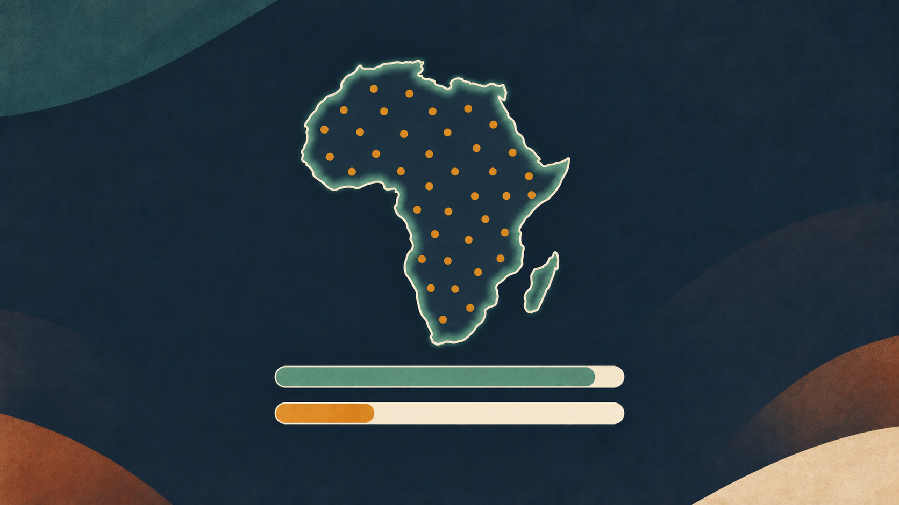

Coverage is widespread. Use is not.
The GSMA’s Digital Africa Index 2026 describes a continent where mobile-broadband networks reach most people, while personal mobile-internet use remains much lower. The distinction is the story: infrastructure availability does not automatically become meaningful participation.

What We Know
GSMA reports that mobile-broadband networks cover 92% of Africa’s population, while 28% use mobile internet on their own devices, leaving a 64% usage gap. The release identifies affordability, digital skills, and relevant content and services as barriers to meaningful use.
Why It Matters
Network reach and lived access are different measures. A policy response that counts towers alone can miss device costs, skills, electricity, local-language services, safety and the reasons people do not adopt or sustain use.
What We’re Watching
- Whether the reported figures are reproduced consistently in the final GSMA release and supporting report.
- How much variation sits behind the continental averages; this visual does not make country-level claims.
- Whether policy and industry responses address affordability, skills and relevant services as well as coverage.